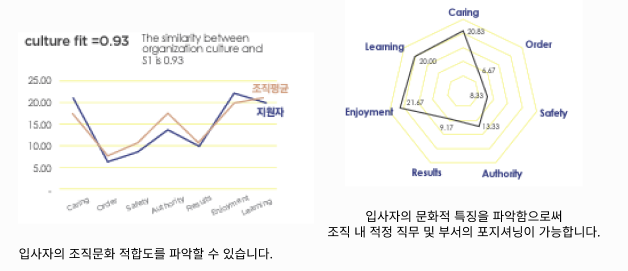

조직의 성장과 인재의 행복을 견인하는 조직문화 적합도 진단
- 컬쳐핏이란?
- Why CultureFit
- Service
- Business Progress
- Contact
Service
FOR GROUP 조직용
- 조직의 컬쳐핏을 진단함으로써 조직과 구성원의 문화적 특성을 파악할 수 있습니다.
- 구성원 간 조직문화의 역학관계를 파악함으로써 조직의 핵심인물, 조직의 관리가 필요한 인물을 파악할 수 있습니다.
- 부서 등 세부 조직을 구성하는 임직원 간 협력 및 소통의 수준을 판단할 수 있습니다.
분석 결과 예시
FOR APPLICANT 입사지원자용
- 입사지원자의 조직문화 적합도를 진단함으로써 조직적응 수준과 조직의 필요 인재 여부를 예측할 수 있습니다.
- 입사지원자의 문화적 특성을 파악함으로써 필요로 하는 직무에 적합한지 판단이 가능하며 또는 지원자의 문화적 특성에 부합하는 직무를 맡길 수 있습니다.
분석 결과 예시

Process
- 조직문화 적합도 진단 계약 진단 희망 기업의 고유 코드 생성
- 조직문화 적합도 진단 요청진단 대상자 명단 수집 (기업에서 제공)
- 진단 대상자에게 문자 발송응답 요청을 위한 문자 발송
- 진단 대상자 응답진단 대상자가 응답 사이트에 접속해 응답
- 응답 결과 분석진단 대상자의 문화적 특징, 조직문화 적합도, 부서별 적합도, 직급별 적합도, 대표이사 등 특정인과의 적합도 분석
- 진단 결과 보고기업 담당자에게 진단 결과 전달(이메일 발송), 기업 요청시 멘토링 진행